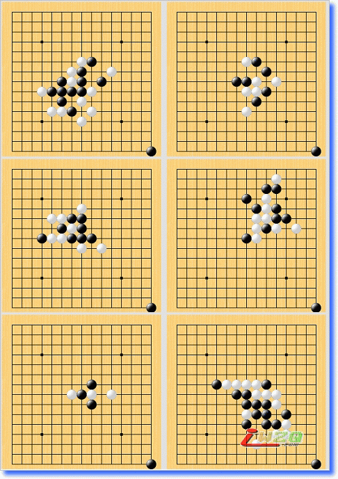

这个残局怎么杀？
#1 这个残局怎么杀？ 作者：剑魔令狐冲 发表时间：2009-4-1 0:50:07
=======上图对应的爱五子棋谱代码如下，以便你拆解：========
h8g8i9i8i7k8o1
======================================================偶发现子越少的 残局越难杀 就好象这个 请问各路高手 怎么办 就这么几个子
#2 Re:这个残局怎么杀？ 作者：江南新绿 发表时间：2009-4-1 11:18:48
=======上图对应的爱五子棋谱代码如下，以便你拆解：========
h8h9h10j9g9f9f8e7g8i8g10g7g11g12j10f10i9f12k7j8k10i10k11l12i11j12k9k8h11
======================================================
#3 Re:Re:这个残局怎么杀？ 作者：剑魔令狐冲 发表时间：2009-4-1 18:27:26
杀的很精彩 不过你 好象 少摆了一颗子 7手是放在角落的 这个残局白先
7手是放在角落的 这个残局白先
#4 Re:这个残局怎么杀？ 作者：江南新绿 发表时间：2009-4-1 18:57:48
你不会是看不懂这个局吧。
#5 Re:这个残局怎么杀？ 作者：nara 发表时间：2009-4-1 19:00:27
=======上图对应的爱五子棋谱代码如下，以便你拆解：========
h8g8i9i8i7k8o1h9
======================================================
按楼主的意思（白先），除了这个白8还不错外，其他的8应该都不行吧。
#6 Re:这个残局怎么杀？ 作者：剑魔令狐冲 发表时间：2009-4-1 22:38:02
我只知道 这个残局白先手胜 结果阁下 少下一子 变成黑杀白了
#7 Re:这个残局怎么杀？ 作者：nara 发表时间：2009-4-11 20:34:47
总觉得眼熟，这个是天狗的连攻习题吧！楼主搞错了吧，角落那个子是表示黑先行！见下图右下
［ 小丸.net 于 2009-4-18 16:54:36 时奖励此帖[金币加 20 威望加1］
#8 Re:这个残局怎么杀？ 作者：屏蔽 发表时间：2009-4-11 23:02:59
=======上图对应的爱五子棋谱代码如下，以便你拆解：========
h8h9h10f9g9j9f8e7f10i7g8
======================================================
天狗道场偶尔是会娱乐一下的，这玩意就是目算找到一条轻松的胜法就好。
#9 Re:这个残局怎么杀？ 作者：非鸟 发表时间：2009-4-12 0:00:02
 好象是该白下
好象是该白下
#10 Re:这个残局怎么杀？ 作者：无尽 发表时间：2009-4-12 9:57:46
7楼已经解释了
#11 Re:这个残局怎么杀？ 作者：剑魔令狐冲 发表时间：2009-4-16 15:33:58
感情 我一直都在想白棋的VCT怎么走 谢谢7楼朋友的 朋友在这里说明 如果是黑先的话 那这个题就挺容易的了 江南新绿 不好意思哈 是偶没搞清楚
谢谢7楼朋友的 朋友在这里说明 如果是黑先的话 那这个题就挺容易的了 江南新绿 不好意思哈 是偶没搞清楚 话说回来 那些习题 白先 也能走出另一番感觉来的
话说回来 那些习题 白先 也能走出另一番感觉来的
#12 Re:Re:Re:这个残局怎么杀？ 作者：超级天逸超人 发表时间：2009-4-19 16:09:43
引用：
原文由 剑魔令狐冲 发表于 2009-4-1 18:27:26 :
杀的很精彩 不过你 好象 少摆了一颗子顶 嘿嘿~貌似 是少放了那一点子